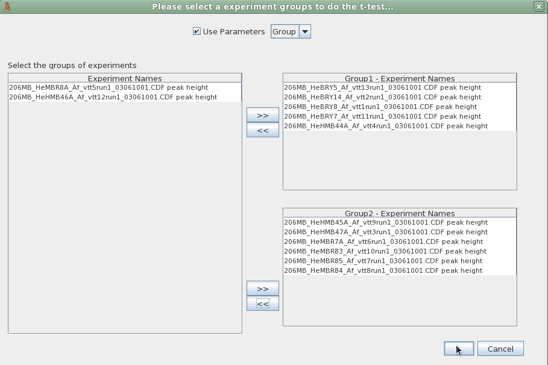

A t-test is any statistical hypothesis test in which the test statistic follows a Student's t distribution if the null hypothesis is supported. It is most commonly applied when the test statistic would follow a normal distribution if the value of a scaling term in the test statistic were known. When the scaling term is unknown and is replaced by an estimate based on the data, the test statistic (under certain conditions) follows a Student's t distribution.
In probability and statistics, Student's t-distribution (or simply the t-distribution) is a continuous probability distribution that arises in the problem of estimating the mean of a normally distributed population when the sample size is small.
Among the most frequently used t-tests are:
* A one-sample location test of whether the mean of a normally distributed
population has a value specified in a null hypothesis.
* A two sample location test of the null hypothesis that the means of two
normally distributed populations are equal. All such tests are usually
called Student's t-tests, though strictly speaking that name should only
be used if the variances of the two populations are also assumed to be equal;
the form of the test used when this assumption is dropped is sometimes
called Welch's t-test. These tests are often referred to as "unpaired"
or "independent samples" t-tests, as they are typically applied when the
statistical units underlying the two samples being compared are
non-overlapping.
* A test of the null hypothesis that the difference between two responses
measured on the same statistical unit has a mean value of zero. For example,
suppose we measure the size of a cancer patient's tumor before and after a
treatment. If the treatment is effective, we expect the tumor size for many
of the patients to be smaller following the treatment. This is often referred
to as the "paired" or "repeated measures" t-test:[5][6] see paired difference
test.
* A test of whether the slope of a regression line differs significantly
from 0.
source: Wikipedia
Two groups of samples have to be selected by the user trough the parameters of the dataset or manually.
